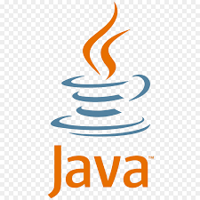
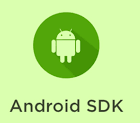

About Me
Highly skilled Mobile App Developer with 8 years of experience in Android (Kotlin) and cross-platform development (Flutter/Dart). Proven expertise in designing, developing, and deploying high-performance, user-friendly applications across various industries. Proficient in all stages of the SDLC, from concept to deployment and maintenance. Adept at solving complex problems and delivering creative, scalable, and maintainable solutions with a strong focus on quality code and performance.
Contact
- üìû +91-9743329491
- üìß anandkumarcrpatna@gmail.com
- üìç Bengaluru, Karnataka
Education
- Bachelor of Engineering (BE) in Computer Science
- Jan 2012 - Dec 2015
- Rajeev Institute of Technology, HASSAN
- Diploma in Computer Science
- Jan 2009 - Dec 2012
- Smt.L.V(Govt) Polytechnic, Hassan
Certificates
- Cutshort Certified Android Development Basic
- Feb 2022
Ananda Kumara K R
Senior Software Engineer
Skills
- 

- 


Languages:-
Mobile Developmen:-
Frameworks:-
Tools:-
Databases:-
Version Control:-
Design Patterns:-
Testing:-
Others:-
Experience
Senior Software Engineer Mar 2022 – present
HyperThink Systems India Pvt Lts, Bengaluru
- Led the development and launch of 10+ Android applications, enhancing user engagement by 30% through intuitive designs and high-performance code.
- Spearheaded the transition from Java to Kotlin for existing projects, reducing app size and increasing maintainability.
- Designed and developed multiple cross-platform applications using Flutter (Dart), providing users with a seamless experience across iOS and Android.
- Collaborated with UX/UI designers to create responsive and intuitive interfaces with Material Design principles.
- Integrated third-party services and APIs (Google Maps, Firebase, Payment Gateways) to extend app functionality.
- Implemented in-app analytics and push notifications with Firebase Cloud Messaging.
- Wrote unit and UI tests to ensure app stability and reliability using JUnit, Espresso.
- Mentored junior developers, conducting code reviews and providing guidance on best practices.
- Published and maintained apps on Google Play Store, adhering to all guidelines and ensuring timely updates.
Senior Software Engineer Nov 2020 - Feb 2022
PRIMUS Global Technologies Pvt Ltd, Bengaluru
- Developed and maintained Android applications using Kotlin, delivering scalable and bug-free solutions.
- Worked on integrating RESTful APIs and handling data persistence with SQLite.
- Implemented complex user interfaces and animations using Kotlin and XML, improving app aesthetics and usability.
- Collaborated with cross-functional teams to design, develop, and deploy mobile applications with high user satisfaction ratings.
- Developed and integrated payment gateways.
Software Developer Mar 2019 - Dec 2020
EduBridge Learning Pvt. Ltd., Bengaluru
- Developed and maintained Android applications using Kotlin, delivering scalable and bug-free solutions.
- Worked on integrating RESTful APIs and handling data persistence with SQLite.
- Implemented complex user interfaces and animations using Kotlin and XML, improving app aesthetics and usability.
- Collaborated with cross-functional teams to design, develop, and deploy mobile applications with high user satisfaction ratings.
- Developed and integrated payment gateways.
- Assisted in the development and maintenance of Android applications using Java and Kotlin.
- Worked on bug fixes, UI updates, and integrating new features into existing mobile applications.
- Participated in the development of user interfaces using Android XML layouts and custom views.
- Supported senior developers in app deployment and testing on physical devices and emulators.
- Gained experience in using Git for version control, following best practices in collaboration.
Android Developer Dec 2016 - Mar 2019
San Solution India Private Limited, Bengaluru